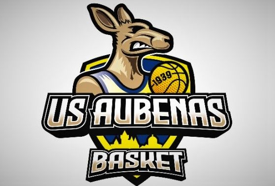
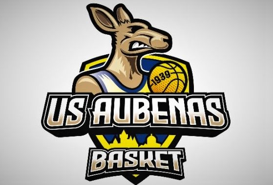

Passionné depuis l’enfance par la musique et initié à différents instruments (batterie, piano) je joue à présent de la guitare et ce depuis deux ans. Cette distraction m’apporte également justesse, patience et assiduité.
Dans le cadre de ma scolarité, j’ai participé à différents projets musicaux. L’enregistrement d’un CD à l’école primaire, la participation à une chorale à l’Opéra Comédie de Montpellier et la création d’un clip de rap lors de mon année de troisième. Ces expériences m’ont permis d’explorer le processus de création en équipe et également de comprendre la rigueur nécessaire à l’élaboration d’un projet.
 w
Je pratique le basketball depuis 2014 au club de l’Union Sportive Aubenas Basket. Ce sport m’apporte une condition physique et le dépassement de soi. Outre les entraînements effectués et les matchs joués, j’ai également appris la solidarité, les règles, le respect et le « vivre ensemble ».

w
Je pratique le basketball depuis 2014 au club de l’Union Sportive Aubenas Basket. Ce sport m’apporte une condition physique et le dépassement de soi. Outre les entraînements effectués et les matchs joués, j’ai également appris la solidarité, les règles, le respect et le « vivre ensemble ».

Tout au long de ma scolarité j’ai participé à des voyages scolaires à l’étranger Angleterre et Pays de Galles en 2019, Allemagne en 2023. Les voyages personnels m’ont aussi permis de découvrir plusieurs pays européens : la Pologne et l’Autriche en 2014, l’Espagne en 2021, ... Les échanges avec des correspondants, la découverte de nouvelles cultures ont développé m’ont goût du voyage et le désir de partir à l’étranger. L’option Euro suivi au lycée, l’examen pour la certification Cambridge m’aident dans cet objectif.